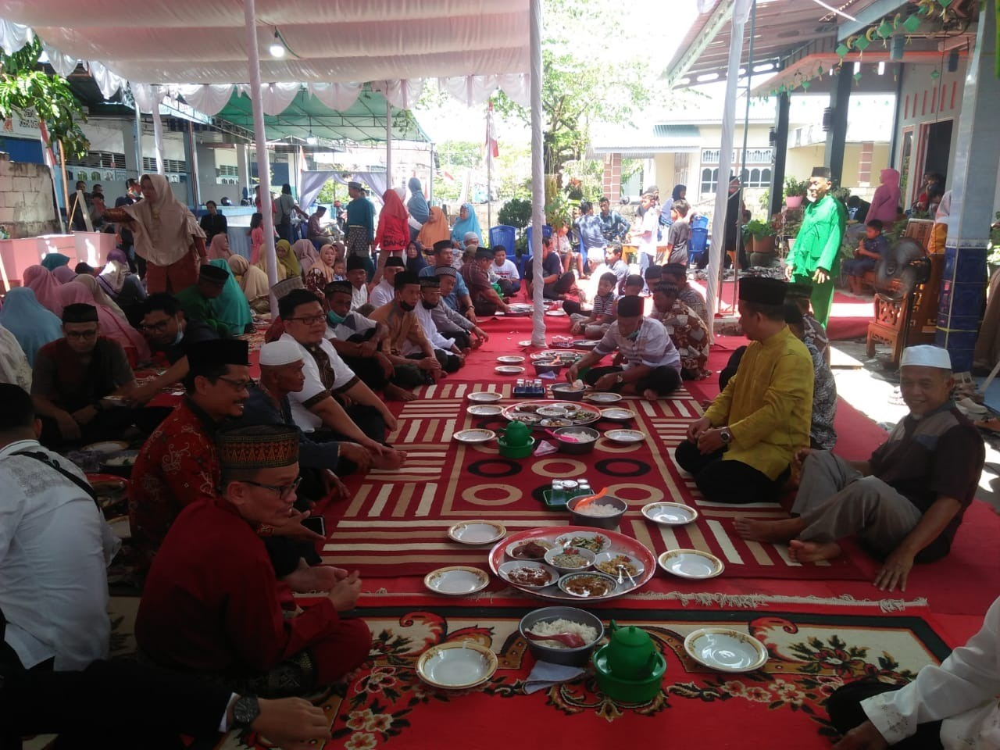

Gotong Royong
Semangat kebersamaan dan gotong royong menjadi salah satu nilai penting dalam kehidupan masyarakat desa.
BUDAYA & KEHIDUPAN
Mengenal aktivitas, tradisi, dan kehidupan masyarakat Desa Sungai Kelambu.
KEHIDUPAN MASYARAKAT
Semangat kebersamaan dan gotong royong menjadi salah satu nilai penting dalam kehidupan masyarakat desa.
Berbagai kegiatan masyarakat menjadi bagian dari kehidupan sosial dan kebersamaan warga.
Makanan dan kuliner lokal merupakan bagian dari kekayaan kehidupan masyarakat.
Tradisi masyarakat menjadi bagian dari identitas dan kekayaan budaya yang perlu dilestarikan.

KEHIDUPAN DESA
Kehidupan masyarakat desa tidak hanya tentang tempat tinggal, tetapi juga tentang hubungan antarwarga, kebersamaan, dan kepedulian terhadap lingkungan.
Nilai-nilai tersebut menjadi bagian penting yang membuat kehidupan di desa memiliki karakter tersendiri.